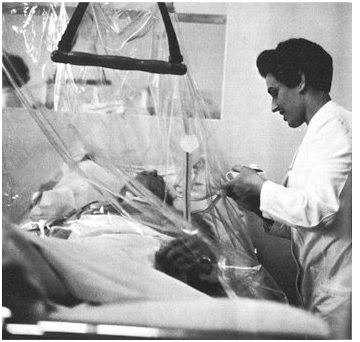
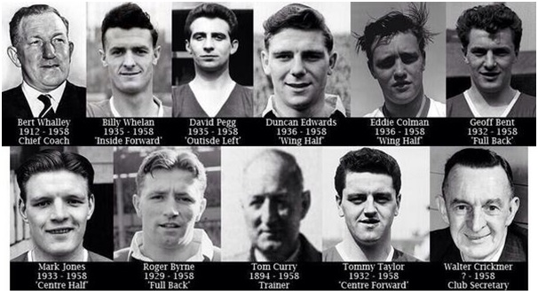

Chương 12

ốn giờ chiều ngày thứ năm, 6 tháng 2, 1958, Jimmy Murphy về đến Old Trafford, sau khi dẫn dắt đội tuyển xứ Wales giành thắng lợi 2-0 trước Israel.Đi ngang phòng thư ký Alma George, ông nghe tiếng gọi thảng thốt:
-Ông Murphy! Ông Murphy ơi!
-Gì thế cô?
-Ôi, ông chưa biết gì sao? Máy bay đội mình vừa rơi ở Munich. Nhiều người chết lắm!
Murphy đứng lặng. George phải nói đến lần thứ ba, ông mới hiểu chuyện gì đã xảy ra. Cổ họng như tắc nghẹn, ông vội vào văn phòng, uống một ly Scotch cho trấn tĩnh tinh thần, rồi bắt đầu gọi điện đi khắp nơi: sở cảnh sát, tòa soạn các báo, đài BBC, để hỏi thêm sự tình. Bên ngoài, người hâm mộ cũng bắt đầu hay tin, từ bốn phương đổ dồn về Old Trafford, ban đầu là hàng trăm, sau lên tới hàng ngàn.
Sáu giờ chiều, các báo đồng loạt ra ấn bản đặc biệt, với trọng tâm là thảm họa Munich. Do tai nạn vừa mới xảy ra, thông tin còn hỗn độn, tin tức trên báo phần nhiều sai lạc. Nhật báo cho hay số người tử nạn là 28, trong khi thực tế chỉ 21. Về việc ai mất ai còn, mỗi nơi nói một khác. Có báo cho biết chỉ ba cầu thủ chắc chắn còn sống: Gregg, Foulkes và Charlton. Báo khác lại bảo Roger Byrne không những chưa chết, mà còn tích cực tham gia chữa cháy. Mãi đến tối, radio và truyền hình mới cập nhật danh sách chính xác hơn.
“Tôi chưa từng thấy thành phố nào rơi vào tang thương như Manchester đêm ấy”, một phóng viên viết trên tờ Daily Mail, “Ở mọi nhà, mọi quán, mọi công sở, trên xe lửa, xe điện, đâu đâu cũng bàn chuyện “đội bóng tuyệt vời của chúng ta”. Tại các quán rượu, khi radio bắt đầu phát bản tin, ai nấy đều ngừng nói, ngừng chạm ly, chăm chú lắng nghe.”
Một người hâm mộ United kể lại cảm xúc của mình về cái ngày định mệnh:
“Ngày đó, tôi mới 8 tuổi, đang chơi đá banh cùng bạn bè sau buổi tan học. Tôi sút một cú vào, nhưng thằng bạn lại cãi chưa. Đang tranh cãi nhau, tôi ngẩng lên chợt thấy chú mình, bèn nhờ ông phân xử:
“Chú ơi, lúc nãy cháu sút vào đúng không? Ơ, mà sao chú khóc thế kia?”
“Chú kéo tôi đi, cho tôi biết máy bay chở United vừa gặp nạn.
“Tôi bước đi cùng chú, lòng rối bời không biết sự tình ra sao. Duncan lớn, Tommy Taylor, Bobby Charlton, Bill Foulkes, họ đều là siêu sao. Chuyện gì có thể xảy ra cho họ được cơ chứ?
“Đến nhà ông nội, chúng tôi cùng quây quần bên chiếc radio. Cứ năm phút một lần, người ta lại cập nhật tin tức. Ngoài phố đầy những đám đông tụ tập. Nhiều nhà vừa bật truyền thanh, vừa mở toang cửa, để khách bộ hành có thể nghe nhờ.
“Dần dần, bắt đầu có thông tin chính xác. Matt Busby còn sống nhưng nguy kịch, Duncan lớn thập tử nhất sinh… Không phải chứ, trời ơi, Duncan, anh là người bất hoại, vững chắc như tường thành cơ mà…Tommy Taylor nghe bảo đã chết rồi…Nhầm, làm ơn, thông báo lại là có sự nhầm lẫn đi…David Pegg cũng chết nữa…Pegg vừa rồi còn gặp tôi, nói chuyện với tôi…
“Chú tôi buồn hơn tôi nhiều. Dù cuồng nhiệt thật, nhưng tôi vẫn bé quá, còn chú đã ủng hộ United biết bao năm. Đêm đó, tôi không muốn về, tôi ở lại nhà ông nội cùng chú. Chẳng phải vì chú đâu, vì tôi thôi. Tôi cần một người hiểu mình. Cha tôi là CĐV của City. Ông ấy thì biết cái gì? Chỉ trong vài tiếng đồng hồ, dường như tôi đã trưởng thành. Con nít thường không biết xúc động, riêng tôi khi ấy xúc độngvô cùng.
“Cứ ngồi nghe mãi, không ai nói với nhau câu nào, rồi chúng tôi kéo sang nhà Geoff xem ké TV. Những hình ảnh đầu tiên về vụ tai nạn ập vào mắt. Ôi, dễ sợ biết chừng nào. Vậy là từ nay, tôi sẽ không bao giờ được thấy những Tommy Taylor, David Pegg, Roger Byrne nữa.
“12 giờ đêm. Tôi vẫn ngồi bên chú.Chú khóc, khóc thật nhiều. Tôi nhìn chú, rồi nhìn lại chiếc gối bên dưới mình. Nó cũng đẫm nước mắt từ bao giờ…Sáng hôm sau, ông nội bảo tôi không cần đi học. Chú cũng nghỉ làm, ở nhà. Chúng tôi cứ ngồi, và chờ đợi…”
Tại nhà Matt Busby, từ khi nghe tin dữ về chồng, bà Jean như người mất hồn, cứ ngồi trên ghế nhìn chằm chằm vào lò sưởi, ai nói gì cũng không nghe không biết. Đến lúc có người chạy đến báo Busby vẫn sống, bà mới chợt tỉnh, vội vàng tìm hiểu thêm tin tức xem ai sống ai chết. Vừa nắm được tình hình, bà lập tức sai các con đi, tới chia buồn với từng gia đình có người tử nạn.
Về phần Jimmy Murphy, sau khi gọi điện đi các nơi, ông giam mình trong phòng suốt đêm, chỉ khóc và uống, uống và khóc. Bình thường chỉ dùng bia, không đụng đến rượu, song lần đó, ông uống cạn chai Scotch. Sáng hôm sau, ông thu xếp mọi việc, chuẩn bị đáp máy bay sang Munich.
Đến Đức, Murphy được các bác sỹ thông báo tình hình: Cả Busby, Berry và Edwards đều rất nguy kịch, không biết cứu nổi hay không. Riêng Edwards còn sống là nhờ thể lực phi thường, người khác bị thương như anh ắt chết ngay tức khắc. Matt Busby nằm trong lều ôxy, mặt tái xanh không còn giọt máu. Thấy Murphy, ông vẫy ngay lại, nắm chặt tay, rồi gắng gượng thều thào: “Giúp tôi, Jim, hãy giữ vững ngọn cờ!” Murphy gật đầu mà trong lòng rối bời: Vâng, tôi sẽ cố. Nhưng người đâu? Còn cầu thủ đâu mà thi đấu đây?

Matt Busby nằm trong lều ôxy (Ảnh: Thebusbybabes.com)
Khi Murphy tới giường Edwards, anh chợt mở mắt nhìn lên. “Thầy Jimmy đấy ư?”, Edwards hỏi, “Thứ bảy này đá mấy giờ? Có phải ba giờ không? Em không thể lỡ trận gặp Wolves được”.
-Không phải lo, con trai. Cho con nghỉ trận đó. Không cần con vẫn dư sức thắng Wolves.
Murphy trả lời, cố ghìm dòng nước mắt. Duncan Edwards, ôi, con người ấy đang phải đấu tranh cùng tử thần từng giây từng phút, vậy mà giữa thời khắc tử sinh vẫn chỉ nghĩ đến túc cầu. Vết thương quá nặng thế này, anh nếu sống cũng chắc chắn phải giã từ sân cỏ, nói chi đến trận đấu thứ bảy?
“Cố gắng lên”, Edwards thở dài rồi chìm vào giấc ngủ.
Đó cũng là những lời cuối cùng của chàng tiền vệ tài hoa. Ngày 21 tháng 2, 1958, anh qua đời, tuổi mới 21.
“Nếu còn Edwards, chúng tôi sẽ phục thù Real Madrid để vô địch châu Âu”, Bobby Charlton nhận định, “Nếu còn Edwards, tuyển Anh cũng có thể giành World Cup ở Thụy Điển. World Cup ấy là của Pele, song Edwards mà còn sống, Pele hẳn đã gặp đối trọng lớn. Các cầu thủ vĩ đại tôi đều biết cả, từ Pele, Maradona, Best, Law, Greaves cho đến người tôi thích nhất là Di Stefano. So với họ, Duncan trội hơn về mọi phương diện.”
Matt Busby tưởng chừng cũng không qua khỏi, gia đình hai lần phải mời linh mục đến giải tội cho ông. Vì bị thương vùng ngực, Busby không thể dùng thuốc giảm đau, dù đau đớn cùng cực khắp người, chỉ những khi đau đến ngất đi mới được giải thoát. Sợ Busby sốc mà ảnh hưởng sức khỏe, mọi người dấu biệt mọi tin tức về những người đã chết. Nhưng ông vẫn biết. Ngày mới vào viện, giữa lúc nửa mê nửa tỉnh, ông đã nghe bác sỹ nói về cái chết của Frank Swift. Sau đó, có lúc nghe lén người này người kia nói chuyện, có lúc tự phán đoán, Busby lập ra một danh sách cho riêng mình. Một ngày nọ, ông hỏi thẳng vợ:
-Jean ơi, đừng giấu anh nữa. Anh biết hết. Anh biết Duncan đã chết rồi. Chỉ cần em khẳng định lại giúp anh thôi. Anh sẽ đọc tên từng người, em cứ gật hoặc lắc đầu là anh hiểu.
Thế rồi Busby nắm tay vợ, chậm rãi đọc từng tên, đến tên người nào đã qua đời, bà Jean lại gật đầu. Ông đọc xong thì nằm vật xuống, nước mắt ròng ròng trên má. Suốt ba ngày kế, ông không nói một lời, không uống không ăn. Ông cầu nguyện liên tục, không phải xin sống, mà xin được chết:
“Tại sao lại là chúng con? Phải chăng ai đã gây nên tội gì, hay chỉ đơn giản bề trên muốn thế? Tại sao không để con chết với mọi người? Con có gì đặc biệt mà cho con được sống? Các học trò của con, chúng đến đội từ tuổi thiếu nhi. Cha mẹ chúng tin tưởng mà trao chúng cho con. Giờ chúng chết rồi, con ăn nói làm sao, làm sao dám nhìn mặt họ đây? Giá như con đừng ham dự Cúp Châu Âu, giờ đây chúng vẫn còn sống. Giá như con ngăn, không cho phi công cất cánh lần thứ ba, mọi chuyện đâu có thế này!”…
Ngày đưa áo quan về Manchester, trời đổ mưa nặng hạt. Bất chấp thời tiết xấu, 100000 người hâm mộ đổ ra đường, đưa tiễn các người con của thành phố thân yêu về chốn vĩnh hằng. Một biển người trải dài từ sân bay đến tận Old Trafford. Những công nhân áo xanh, những ông chủ trịnh trọng, những bà mẹ trẻ bế con, những cô cậu học sinh loắt choắt, ai nấy cùng chia sẻ nỗi bi thương. Nhiều người khóc gào, nhiều người khác lặng yên, quỳ cầu nguyện. Lời chia buồn từ khắp nơi trên thế giới được gửi tới Old Trafford. Chủ tịch Red Star Belgrade đề nghị trao cho United danh hiệu Nhà Vô Địch Danh Dự Cúp C1 1958. Tờ Sport của Nam Tư còn kêu gọi đổi tên Cúp C1 thành Manchester United Cup!
Để tưởng nhớ những người đã khuất, ký giả Eric Winter sáng tác bài thơ mang tên The Flowers of Manchester. Giọng thơ buồn, da diết bi thương, từng dòng chữ như chứa đầy nước mắt. Đặc biệt, bài thơ có thể hát lên theo điệu của ca khúc High Germany. Mỗi năm, đến ngày kỷ niệm thảm họa Munich, CĐV United trên khắp toàn cầu lại tụ tập, cùng hát bài này, tưởng niệm những cầu thủ tài hoa yểu mệnh.
Khoảng 2005, chúng tôi từng phóng dịch[1] The Flowers of Manchester sang Việt ngữ, với tên gọi Những Đóa Hoa Thành Manchester. Nay xin chép lại đây, với đôi chỗ nhuận sắc:
Ngày hôm ấy, tuyết rơi trên đường băng Munich
Trời lạnh căm trong giá buốt thê lương
Tám con người thôi vĩnh viễn bất hồi hương
Ra đi mãi, ôi tám vì tinh tú
Những cầu thủ với tài năng thiên phú
Những bông hoa kiêu hãnh Manchester
Trên chuyến bay trở về từ Belgrade
Các chàng trai của thế hệ Matt Busby
Như gia đình, đâu biết sắp chia ly
Vui thắng trận, đâu hay mầm tử biệt
Trên khoang lái, viên phi công dũng liệt
Dày dặn phi trường: cơ trưởng James Thain
Ba lần bay, hai phải ngược trở về
Và lần cuối đi vào trong cõi chết
Lần cuối ấy bi thương màu tang tóc
Chiếc phi cơ mãi không bao giờ bay
Vì nỗi nào, khi ấy có ai hay
Chệch đường băng, máy bay lật tung vỡ
Trong hoang tàn, lửa bừng lên cháy rỡ
Về phương xa, tám cầu thủ mệnh vong
Roger Byrne nằm kia, Tommy Taylor ở đó
Đây Whelan của Ireland, Geoff Bent của Anh
Mark Jones bên kia, David Pegg bên này
Kế cạnh xác Eddie Colman đồng đội
Họ đều đã trút đi hơi thở cuối
Khi phi cơ bùng nổ trên tuyết băng.
Ngày 21, Duncan Edwards lìa trần
Chàng gục ngã do vết thương trầm trọng
Blanchflower dũng mãnh cũng chìm trong thất vọng
Do suốt đời phải giã nghiệp túc cầu
Nằm lặng yên, cùng cái chết đối đầu
Matt Busby đó, trong cơn thập tử nhất sinh
Tuy không chết, lòng ngài như điêu linh
Mắt nhỏ lệ, khóc các con đã khuất.
Nhưng không chỉ thế, còn biết bao hồn vắn số
Nào trợ huấn viên, thư ký, phi hành đoàn
Và ngoài ra, tám ký giả đi cùng
Cũng một bước về bên kia thế giới
Trong số đấy có Swifty[2]vĩ đại
Thủ môn lừng danh Anh Quốc của một thời.
Thế là hết, một đội quân ưu tú
Mạnh nhất nước Anh, sử sách từng ghi
Sống thật hùng, và cái chết thật bi
Ôi bất hạnh, ôi nghiệt thay định mệnh
Những cầu thủ với tài năng thiên phú
Những bông hoa kiêu hãnh Manchester
Tháng 2, 1958, những người con ưu tú thành Manchester chết đi, để bước vào huyền thoại. Họ không bao giờ nghiện ngập, đánh mất hình tượng như George Best, không bao giờ mang tiếng hám tiền như Cristiano Ronaldo, không bao giờ già, không bao giờ xuống phong độ. Họ sẽ mãi là những chàng trai trẻ trên đỉnh vinh quang, sẵn sàng chinh phục thế gian!

Các thành viên Manchester United thiệt mạng trong thảm họa Munich 1958. Ngoài 11 người kể trên, Jackie Blanchflower và Johnny Berry bị trọng thương, phải vĩnh viễn từ giã sự nghiệp. (Ảnh: 101greatgoals.com)
[1] Chúng tôi nhấn mạnh: Phóng dịch, tức dịch và phóng tác, chứ không phải dịch sát từng chữ theo nghĩa đen.
[2] Tức ký giả Frank Swift, cựu thủ môn Manchester City và ĐTQG Anh.